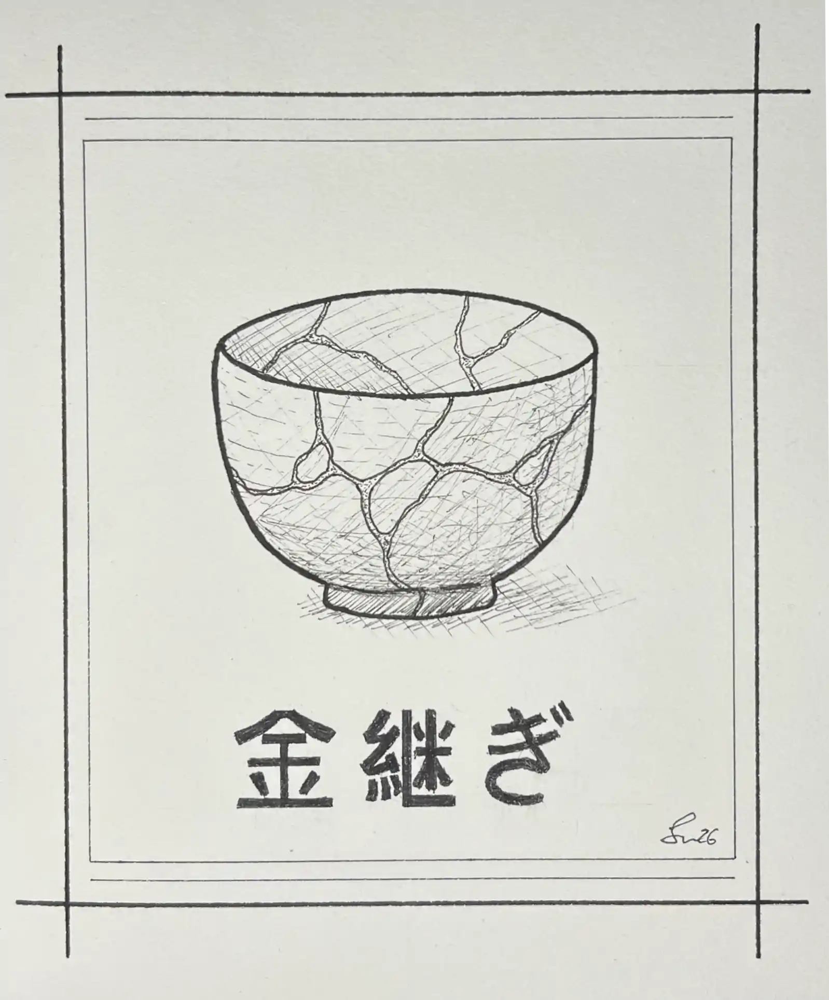

2026 | Pigmentierte Tinte auf Papier | DIN A5 Hochformat
Kintsugi (jap. 金継ぎ, dt. „Goldverbindung“) ist eine japanische Handwerkstechnik, bei der zerbrochene
Keramikstücke geklebt und die Nähte mit Goldlack überzogen werden. Diese Technik rückt die
Schönheit von Rissen und Wunden, die als Teil der Geschichte eines Objekts angesehen werden, in den Vordergrund.
Vergänglichkeit und Unvollkommenheit sind real, sie gehören zum Leben wie die Veränderung und der Abschied.
Doch dabei muss es sich nicht immer um etwas Negatives handeln und genau da setzt die Philosophie an.
Ein zuvor vielleicht gewöhnliches Objekt wird durch seine individuellen Narben zu etwas Einzigartigem.